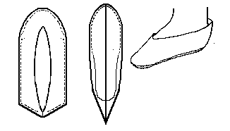

Lottorf Bog Slipper (c700-1000)
A side seam slipper from the Lottorf Bog. It is similar to the
Hungate Slipper, although there is a different heel style from one of the Hungate Slipschoen. There should be a binding seam across the top edge, and the heel gradually should rise up the sides.
This design is based on a description found in
Hald
Return to
[Index] or
[Next]
Footwear of the Middle Ages - Historical Shoe Designs/Number 8, by I. Marc Carlson. Copyright 1996
This page is given for the free exchange of information, provided the Author's Name is included in all future revisions, and no money change hands, other than as expressed in the Copyright Page.